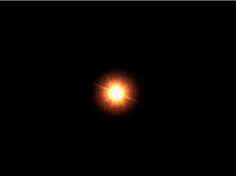
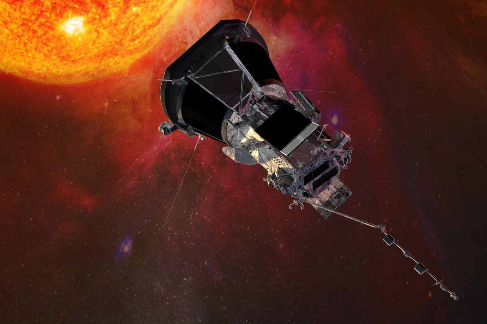

You feel that going closer to the sun is a risk you're willing take. You fly the spaceship a bit closer and the heat is starting to make you feel dizzy. Is this it? Is this where it ends? You feel like you're about to faint when a strong light emits in the corner of your eye. You look but you're too dizzy to comprehend what it is. How am I going to get see what that light is?
 